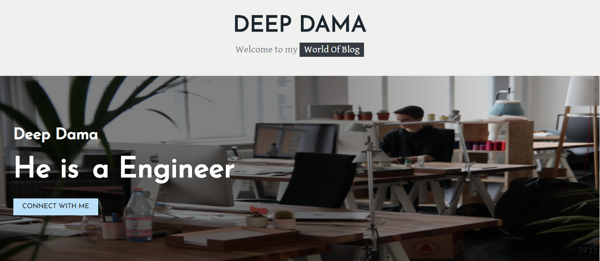
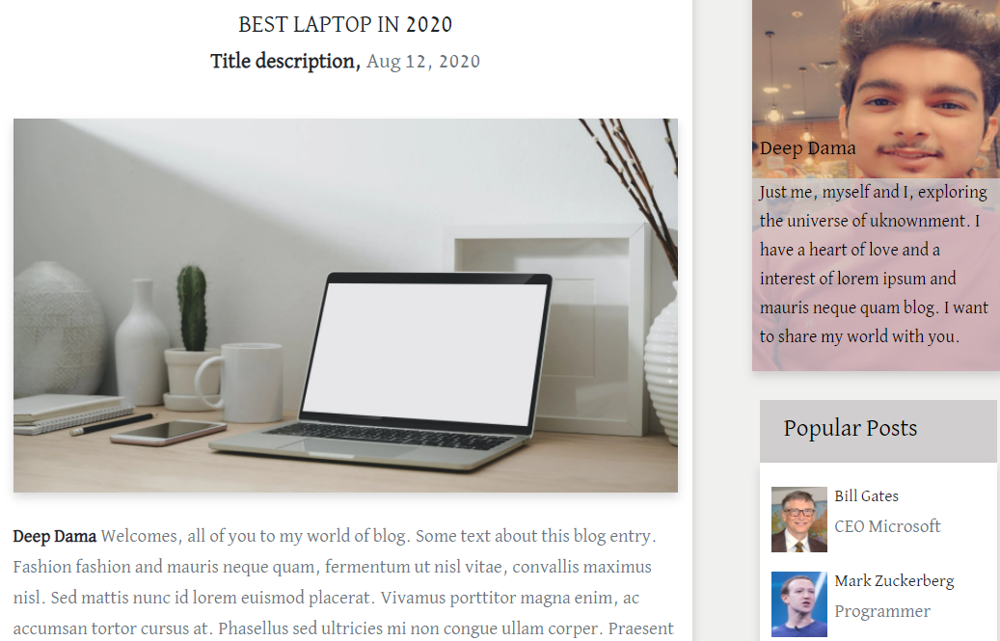
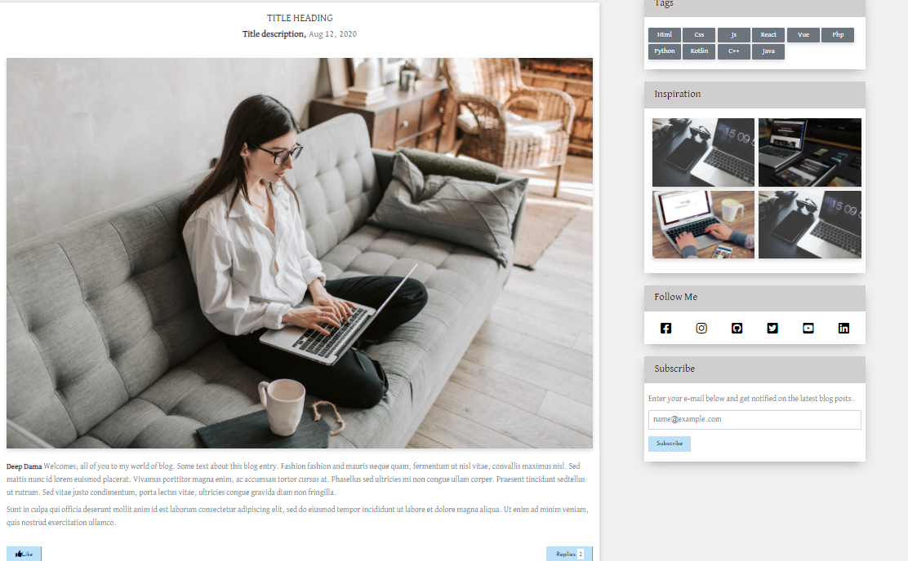

Blog : Using Frontend Techniques
A blog (a shortened version of “weblog”) is an online journal or informational website displaying information in the reverse chronological order, with the latest posts appearing first, at the top. It is a platform where a writer or a group of writers share their views on an individual subject.
The project consist of different sections i.e blog posts, comments on that blog, people...,etc.
This blog deals with showcasing of posts from varied people related to their informal subjects.
We can like, reply the post with comments by which we can deliver informal conversation with bloggers as well.
For posting varied blogs, connecting, liking them is what we can do.
Technologies:
- - Html5
- - Css3
- - Javascript
- - Bootstrap
- - Editor:Sublime Text
Layout of blog

Varied Sections of the blogs

Replying or commenting & liking can be done.